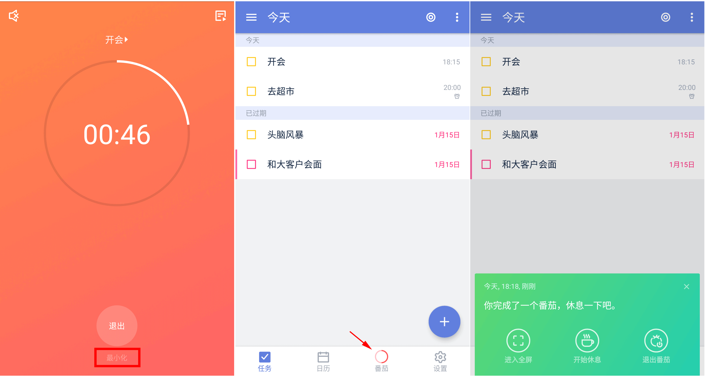

番茄计时
开启/关闭番茄计时
在主界面底部 TAB 栏点击【设置】图标，进入设置界面后点击【番茄计时】并开启开关项即可。（番茄计时默认关闭）

更改番茄计时选项
启用番茄计时后，你可以在设置中对以下选项进行配置：
- 番茄时长：每个番茄倒计时的时长。
- 短休息时长：但番茄结束后，休息倒计时的时长。
- 长休息时长：每完成一定数量的番茄后，进入长休息，长休息倒计时的时长。
- 长休息间隔番茄数：每完成多少个番茄后，进入长休息。
- 开启/关闭“自动开始下个番茄”：休息结束后，自动开始番茄倒计时。
- 开启/关闭“自动休息”：番茄结束后，自动开始休息倒计时。
- 开启/关闭“屏幕常亮”：倒计时过程中，阻止系统锁屏。

开始番茄
启用番茄计时后，你可以从主界面底部 TAB 栏、任务详情、提醒弹窗开始番茄。
- 主界面 TAB 栏：点击【番茄】图标进入番茄界面，点击【开始专注】进入倒计时状态。
- 任务详情：点击任务进入详情，点击右上角【菜单】图标，点击【开始番茄】进入倒计时状态。
- 提醒弹窗：提醒响起时，点击提醒弹窗左下角【开始】图标进入倒计时状态。

在番茄过程中选择/更改任务
进入番茄倒计时界面后，点击右上角【选择任务】图标，在弹窗内点击任务，即可在番茄倒计时界面显示这条任务的标题。在选择任务的弹窗内，你可以
- 直接点击任务选中
- 点击弹窗左上角【清单】切换清单
- 点击弹窗右上角【搜索】直接搜索任务
选定任务后，再次点击【选择任务】图标，可以更改任务。

番茄白噪音
在番茄进行中，可以选择一个白噪音作为背景音播放，进而获得更好的专注体验。
点击【开始专注】开始番茄后，或点击右上角图标进入任务列表，选择一个任务开始番茄后，点击界面左上角白噪音图标，进行设置。
番茄背景音默认为无声音，可在“无声音”、“普通”、“风铃”、“森林”、“雨”、“火”中选择一个声音，番茄进行过程中支持随时更换白噪音。
注：一次只能选择一个白噪音，不可叠加多个声音。

最小化番茄
在番茄进行中，点击【退出】按键下方的【最小化】，将番茄计时最小化到底部TAB栏，方便临时添加任务或者在滴答中完成其他工作。
最小化后仍可以从主界面TAB栏上番茄图标的红色动态环判断番茄的状态。当一个番茄结束进入休息界面时，TAB栏上的番茄图标也会变成绿色，并且弹出休息提示弹窗。

预计番茄
为任务设置预计需要的番茄数量，帮助更加合理的安排每日计划。进入任务详情页，点击右上角更多设置图标，选择【预计番茄】，在弹窗中左右滑动选择条，进行任务预计番茄数的设置。
设置成功后，任务详情页内任务优先级的图标下方，以及清单列表页开启【显示详情】后，都会出现设置的预计番茄。